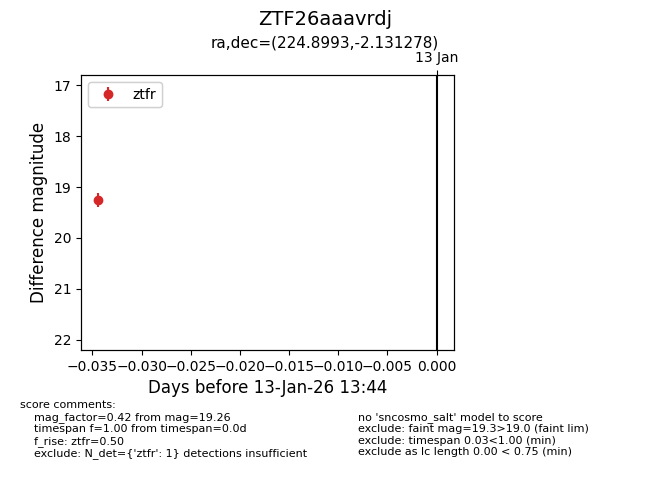
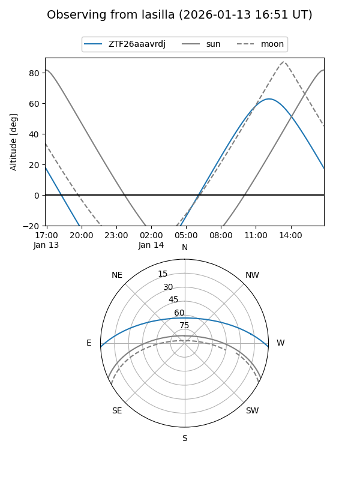
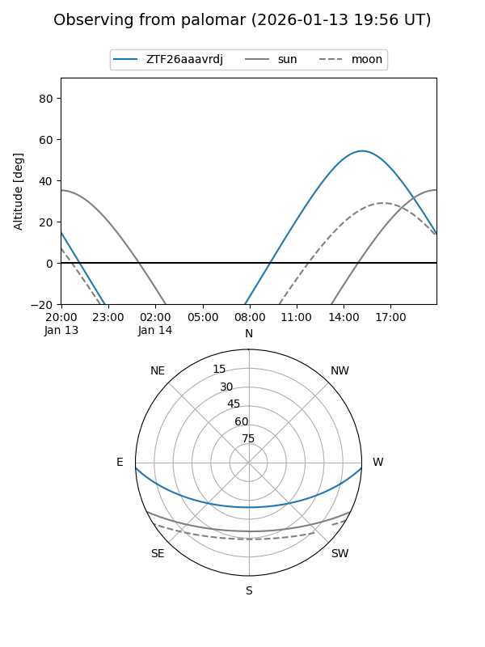

ZTF26aaavrdj
Target ZTF26aaavrdj at 2026-01-13 13:45
Aliases and brokers:
FINK: link
Lasair: link
ALeRCE: link
alt names
ZTF26aaavrdj (ztf,fink_ztf)
Coordinates:
equatorial (ra, dec) = 224.8993,-2.13128
equatorial (HMS+DMS) = 14:59:35.84,-02:07:52.60
galactic (l, b) = (354.5869,+47.47181)
Flags:
Photometry:
last ztfr=19.26
1 ztfr detections
Lightcurve

Visibility


Additional plots